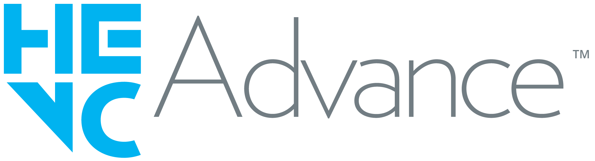

Autortiesības
Operētājsistēmā, sistēmas failos, pamatfunkciju programmatūrā un lietotnēs, kas ir šajā ierīcē, ieguldījumu ir veicis vai tās iz izstrādājis uzņēmums vivo Mobile Communication Co., Ltd.
Autortiesības © 2011. gads līdz šim brīdim vivo Mobile Communication Co., Ltd.
Visas tiesības paturētas
Šeit minētie darbi (“Darbi”) attiecas uz visiem tālruņa failiem, sistēmām, programmatūru un programmām, tostarp (bet ne tikai) pamatfunkciju programmatūru, iepriekš instalētajām lietotnēm, operētājsistēmu, mobilā tālruņa programmām un sistēmas failiem, kurus ir izstrādājis uzņēmums vivo Mobile Communication Co., Ltd. (${build.brand}) kuri tam pieder vai kurus tas nodrošina un kas nav atsevišķi izlaisti saskaņā ar atklātā pirmkoda programmatūras licences noteikumiem. Darbos ietvertā informācija ir ${build.brand} ekskluzīvs īpašums visā pasaulē un bez termiņa vai atbilstoši apstākļiem. Pirms šīs galaierīces piegādes galalietotājiem neviena trešā puse nedrīkst modificēt, uzlauzt, dekompilēt vai dzēst jebkādus failus, sistēmu, programmatūru vai programmas, kas ir šajā galaierīcē, nedz arī iepriekš instalēt lietotnes šajā galaierīcē bez ${build.brand} iepriekšējas piekrišanas. ${build.brand} šīs galaierīces juridiskajam lietotājam piešķir tiesības izmantot Darbus tikai un vienīgi ierīces tiesiskas ekspluatācijas ietvaros. Galalietotājs nedrīkst — individuāli vai izmantojot trešo pusi — modificēt, uzlauzt, dekompilēt vai dzēst jebkādu pamatfunkciju programmatūru, sistēmas failus, operētājsistēmu vai resursdatoru failus, kas ir galaierīcē. Šādas darbības var kaitēt šai galaierīcei, tostarp (bet ne tikai) bojāt sistēmas failus, izraisīt kļūdainu darbību, ierīces nestabilitāti, personas datu izpaušanu un īpašuma zudumu. Galalietotājs uzņemas atbildību par visām iepriekš minēto darbību sekām. ${build.brand} patur tiesības izmeklēt juridisko atbildību, ja šāda rīcība rada zaudējumus uzņēmumam ${build.brand}. Šeit netiek piešķirtas nekādas papildu tiesības, tostarp (bet ne tikai) izplatīšanai, reproducēšanai, modificēšanai un/vai pārsūtīšanai.
Jebkādai citai Darbu izmantošanai ir nepieciešama ${build.brand} rakstiska piekrišana. Uz visas atbilstošās programmatūras (tostarp komponentiem, ko nodrošina piegādātāji un licenču devēji uzņēmumam ${build.brand}), kas ir iekļauta šīs jūsu iegādātās galaierīces komplektācijā vai tajā iepriekš instalēta, attiecas autortiesību noteikumi un nosacījumi, ko publicē šādi piegādātāji/licenču devēji.
- Trešo pušu intelektuālā īpašuma tiesības
- 1. Atklātā pirmkoda licence
Programmatūrā ietilpst programmatūras faili, uz kuriem attiecas daži atklātā pirmkoda licences līgumi. Uz šādas atklātā pirmkoda programmatūras failiem attiecas paziņojums, kas minēts šajā sadaļā, kā arī citi noteikumi un nosacījumi, un tie tiek nodrošināti “tādi, kādi tie ir” maksimālajā apjomā, kā to pieļauj spēkā esošie tiesību akti.
Attiecībā uz šajā Līgumā iekļautajiem atklātā pirmkoda failiem, lūdzu, skatiet atbilstošos autortiesību un licenču noteikumus šīs Ierīces iestatījumu sadaļā “Atklātā pirmkoda licence”. Ja jums rodas problēmas ar atbilstošo autortiesību un licenču noteikumu atrašanu, lūdzu, sazinieties ar mūsu klientu apkalpošanas dienestu. Apache licence 2.0 ir pieejama šeit: http://www.apache.org/licenses/LICENSE-2.0. - 2. Trešās puses preču zīme
Tālāk norādītā preču zīme pieder uzņēmumam Access Advance, un to nedrīkst izmantot nesankcionēti.

- 3. Intelektuālā īpašuma tiesības, ko patur citas trešās puses
Šo ierīci varat izmantot, lai piekļūtu citu trešo pušu, kuras patur tiesības liegt nesankcionētu piekļuvi, produktiem un pakalpojumiem.